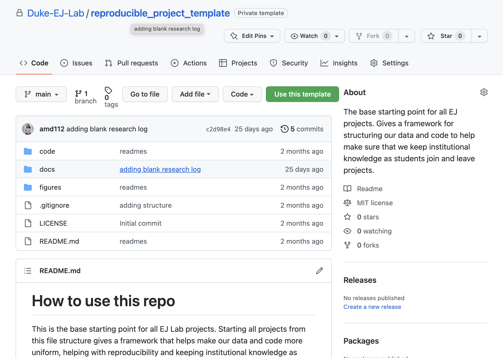
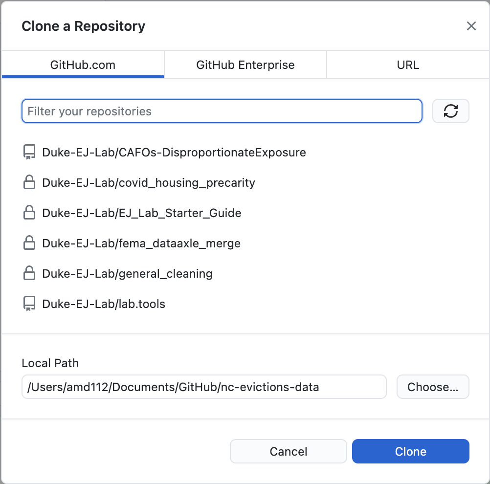
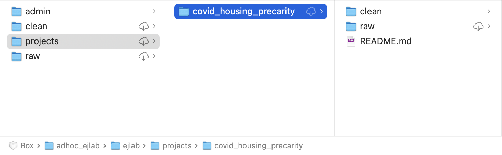
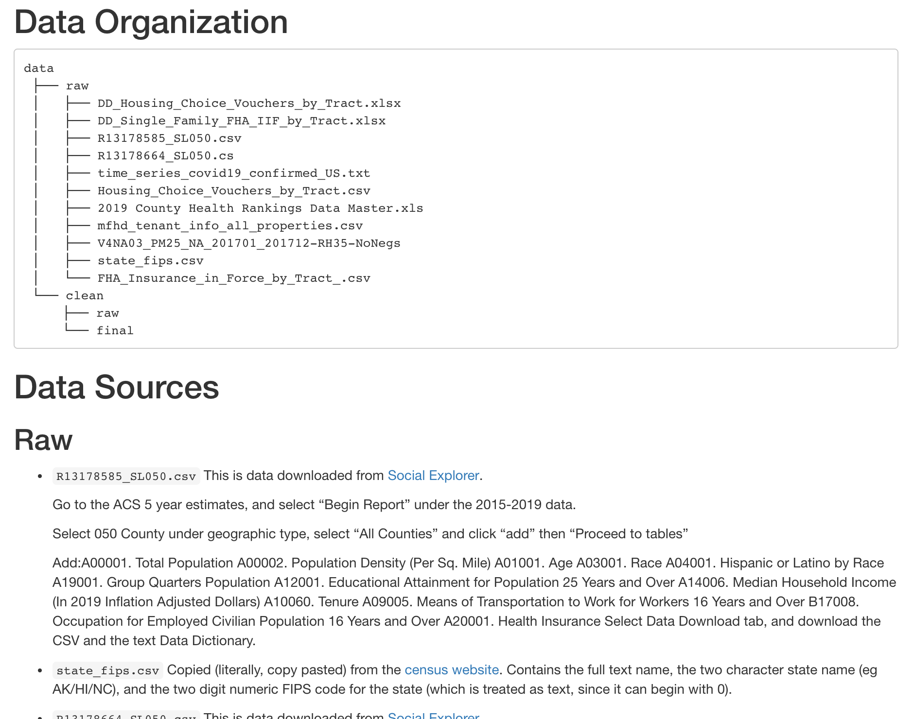
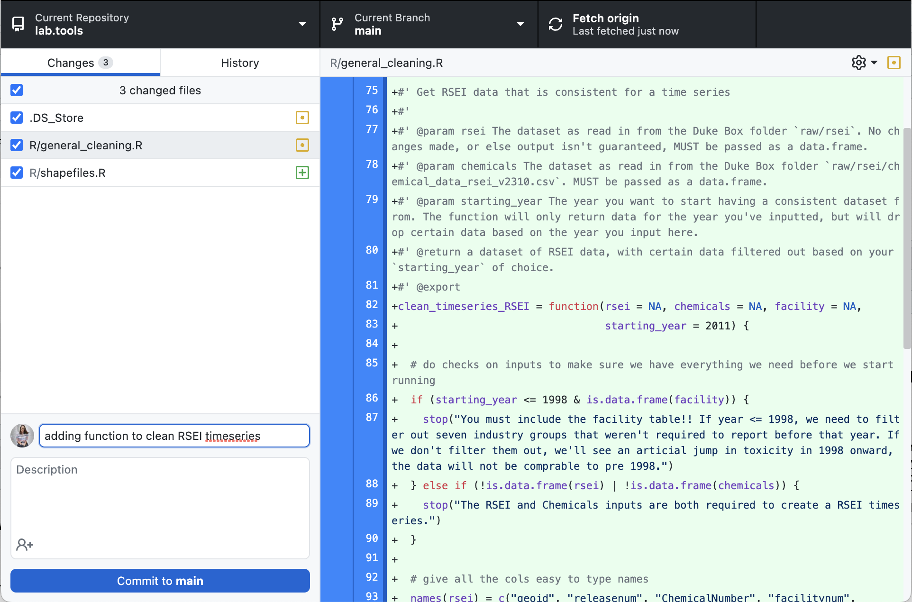
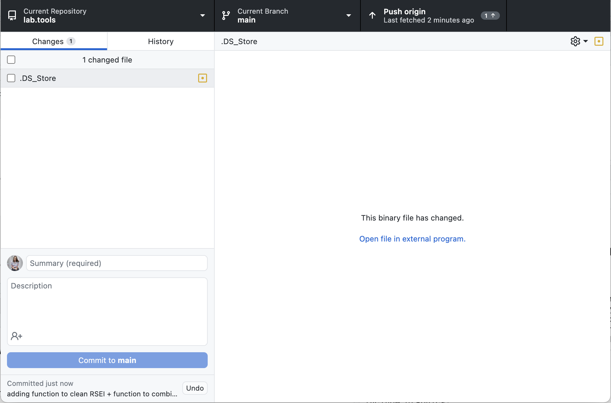

Workflow
This workflow section will cover a lot of expectations in pretty high detail and may be slightly overwhelming. The first section covers the immediate steps that you need to know as you go out, so feel free to start there and come back to this over time. If you find anything unclear feel free to edit this in the repository.
Starting up a Project
Make sure you have access to everything you need: Duke Box (talk to Kay) and the Duke-EJ-Lab GitHub, the VM’s (talk to Anne or Kay, may take a little while) if you are working with protected data or need lots of computational power; make sure you have all the software you need installed: Github Desktop, R, and RStudio or Python and your prefered IDE. We use Github Desktop in this walkthrough for ease, but you’re welcome to use git in command line - whatever fits your needs!
Create a GitHub repo to store all your work in that’s within the Duke-EJ-Lab, based off the template. At the
reproducible_project_templatepage, hit the green “Use this template” button and choose a repository name that’s descriptive of your project, separating words with “_“. Set it to private while the work is in progress, so only other lab members can see the repository.

- Get a local version of your GitHub repo. In GitHub Desktop, find “File -> Clone Repository”, which will bring up a list of repos you could have locally. Select the GitHub repo you just created (you may need to hit the refresh button if you just created it) and hit the blue “Clone” button at the bottom right. This will create a folder containing all the example structure files in your local
Documents/GitHubfolder, you can make any edits to the documents in those folders.

- Create a data folder inside the
projectsfolder of the Duke Box with the same name as you chose for your GitHub repository. This is going to hold all the data that is unique to your project - that covers any data sources that aren’t likely to be helpful for future projects or any of your processed data. It’s recommended you follow something similar to the structure shown here, where you separate therawandcleandata within your project folder.

- Add the data you need to your Box project folder. Check the lab data bank to see if we have anything already cleaned that you can use - you can load anything useful directly from the
cleanfolder, no need to copy it to your own folder. For data you add, add documentation on that data to your Box. It’s most important to document the raw data that you download, so that anyone coming in to your code at a later date will be able to understand the context of the data, know how to update it, and be able to find documentation from the data originator. Add to the README in your Box folder at a minimum when the data was downloaded, how to obtain the data (a link to download/an email for who to contact to get access), and what the data means (a data dictionary) if the data dictionary is not readily accessible either in your folder or at the link to download the data. Here’s an example of of what the README might look like: a layout of the folder structure, followed by the when/how/what of each file. This is an iterative process! Every time you need new data, you’ll come back to update the data documentation.

Write some code. Make sure to save even the exploratory data analysis (EDA) work you’re doing - there’s an
edafolder in your GitHub repository that you can save out intermediate files in.Commit your code to GitHub. Any time you make a change to your code, commit the change to the online version of the code. It’s especially important to do this very often if you are collaborating with others. Good times to commit are: if you just solved a problem you’ve been working on, or if you’re going to stop actively working on it (eg going to class, working on a paper). To commit, go to GitHub Desktop and add a commit message that explains what you’re adding, then hit the blue “Commit” button on the bottom left. Once you’ve done that, hit the black “Push origin” button on the top right.


- Comment, document, and iterate! Go back and forth between writing code, committing it, and cleaning up your code + folder structure as you work through the project - it’s inevitable you’ll be trying different methods, different data sources, finding issues that makes you go through old work, and you want to keep the documentation as clean and minimal as you can throughout the process. Keep any analysis that informed your ultimate decisions and make sure it’s commented, but drop code and data that’s no longer relevant.
Code Documentation
Commenting
Every code file should start with something that looks like this and contains:
the creator
who else is working/has worked on this file
when it was last edited
a one or two sentence description of what the file is trying to do
what the output of the file is.
########################################################################################
# Created by: Anne Driscoll
# Other contributors: Chris Timmins, Kay Jowers
# Last edited on: 8/31/22
#
# This file creates a cleaned dataset of all US flights that is used throughout
# the rest of the analysis in this project.
#
# In the cleaned data each observation is an airport-year, and gives total number of
# flights, along with taxi time and several delay metrics.
########################################################################################If the file is tackling more than one task at a time, it helps to break up the sections for readability, so that others can follow what the code is doing. That might look something like this:
# Load data --------------------------------------------------------------------
# Filter data to only TX airports ----------------------------------------------
# Plot number of flights over time ---------------------------------------------Blocks of code should include more detailed commenting throughout, so that your collaborators can follow your code without spending too much time looking through the details of your code and the functions you call - reduce the mental load! The most important kinds of comments are those that explain why you’re implementing something. A quick explanation of the universe of observations you are aiming for, a mention of the theoretical basis for why you’re defining a variable a specific way, can be really useful so people understand the research decisions you’re making.
File Naming
Good examples would be process_pm_data.R, identify_rural_homes.R, or create_figure_2.R. Bad examples would be CAFO2trylm.R, analysis.R, or cleaning up the obs from corelogic w rural designation.R.
Most of the work we do will be a bunch of ordered files, and these should be numbered. Using the examples above, they should be named in order - 01_process_pm_data.R and 02_create_figure_2.R (assuming no files in between!). These can always be changed if you need to add steps in between!
Object naming
Variable and function names should be lowercase, and use an underscore to separate words. Try to be concise! Good examples would be day_one or first_day, bad examples would be first_day_in_the_data or dotm1.
This is largely lifted from Hadley Wickham’s style guide. Additional guidance can be found there, but these are the most important parts for us.
Documenting Data
- Ever piece of data in the raw folder needs to have documented the what, when, how of the data.
Closing out a Project
There’s lots of ways of re-organizing your code at the end of a project, and you should do whatever works best for you. That said, this is a system that works and feel free to use it. Make sure to read the sections on contributing to the data bank and contributing to the lab package, since those are things to do regardless of your re-organizing process.
Starting with your final model or panel, and figure out what data you actually ended up using. Frequently, throughout the research process we’ll build variables multiple ways and try data from different sources as we build our understanding of what the data means. Once you have your final model and are heading towards writing up a report, you don’t need to keep the legacy code and data.
Work through the data cleaning code, keeping in mind what is included in the final model. For every data cleaning/combining/munging file make sure that it’s still a necessary step and comment the code with a mindset of 30,000 feet. Make sure each file:
Has a header that explains what the overall goal of the file is and how it fits in the project.
Is either short enough that it is only doing one thing, or is sectioned off so a reader can tell what steps are happening just by reading section headers.
Has comments explaining any non-obvious functions.
Has comments explaining research choices. (think: why does it make sense to set the indicator variable to 0 if another variable is NA? not: why is important to account for PM2.5 when studying asthma outcomes)
Make sure every data file in your project folder is documented following when/how/what: when the data was downloaded, how to obtain the data (a link to download/an email for who to contact to get access), and what the data means (a data dictionary) if the data dictionary is not readily accessible either in your folder or at the link to download the data. Remove data that is no longer relevant to the project.
Now that you’ve gone through all steps of your code and have a good conceptual sense of what is there, think if anything might generalize to other lab projects. If you have functions that might be generally useful, move them to the
lab.toolspackage, as described in the package section and make sure your code is pulling the function from the package. If there’s a really generalizable dataset that others might be able to use, move it to the lab data bank (ie thecleanandrawfolders of the Box, rather than your personal project folder). Data must be well documented, and the code to clean it must also be saved following the process described in the databank section below.Delete (or archive if you want to be safe) all the processed data in your project folder and re-run your code straight from the downloaded data. Make sure your results haven’t changed.
Congrats! You should now have a project that can be run by anyone with access to your GitHub repo and the Duke Box folder. To make sure someone on another computer can use your code, check if there’s someone in lab can try to re-run your code. It’s common that issues come up (even when we’re being really careful) so try to account for the fact that it will likely take a while to de-bug some issues, rather than just quickly hitting run on each file. Make sure the person can dedicate at least a few hours to it.
Contributing to the lab data bank
If you have a dataset that’s of interest for the rest of the lab and you want to add it to the data bank there’s only a few steps to follow!
- Write the documentation for the raw data following the following format. Add it to the data section of this document, making sure to follow the instructions in the contributing to the guide section.
#### path/to/data {-}
**Cleaned formats**: This is a great place to load in the data and print out the first few rows so people can get a sense of what the data shows. Include a description of what an observation is.
**What**: What's the meaning of the data? What does it measure? Are there any known issues or things to be aware of if you're going to use it?
Format: csv? raster? shapefile? excel?
Spatial Resolution + Coverage: What geographic region does it cover and what's the geographic unit that a row represents? blockgroup? city? the entire country? a 0.01° section?
Temporal Resolution + Coverage: What time does the data cover? Is it a yearly average? daily? Average over 2006-2020?
**Where**: A link to where the data is sourced. The data in the raw folder should be directly downloadable from where you link to, with no changes to it. If the data isn't publicly available, give info of who you reached out to and the exact format they specified upon giving it to you. Be as precise as you can!
**When**: When did you download the data? This is important in case a new release comes out. Once the data documentation is all there, you can move the raw file to the Box.
Clean up the code you used to create the “clean” version of the data. Make sure to:
- include comments describing the methods of cleaning
- it directly reads the data from the newly saved location
- it directly saves the data to the
Box/cleanfolder, create a relevant subfolder if you’re going to save several files from the same source data, or save in an existing subfolder if it feels correct.
Name the file informatively and put the code in the
general_cleaningGitHub repo. Commit and push your code.Run the code! If you’ve checked that the paths match the Box location, it should just pop up
Contributing to the lab R package
The lab R package is currently minimal, but contains some functions that are useful to some frequent data cleaning tasks that come up across lab projects. If you’re writing a block of code that does a similar task over and over, consider if that’s something that might be useful to just call as a function on your data, and feel free to add it to the lab package! If you do, add a bullet to the lab package section of this document!
A step by step guide on how to contribute to the lab R package can be found in the package repo itself!
Contributing to (this!) lab onboarding doc
Find the GitHub repo that contains all the documents for this site, and get it locally.
Install the
bookdownpackage, as well as the packages used in the book (formatR,readr,raster, andtidyverse)
install.packages("bookdown")
library(bookdown)Make changes to whichever of the
Rmdfiles you wanted to update.The site displays
htmlfiles that are created from theRmdfiles, so you need to make sure the html files reflect your changes. Use thebookdownpackage to render the book. Make sure you’re in the directory containing theRmdfiles when you run this.
render_book()- Commit (and push) your changes, so they are stored on the GitHub website instead of just your local computer, and the changes will update automatically. Beware it can take a while for changes to show up.